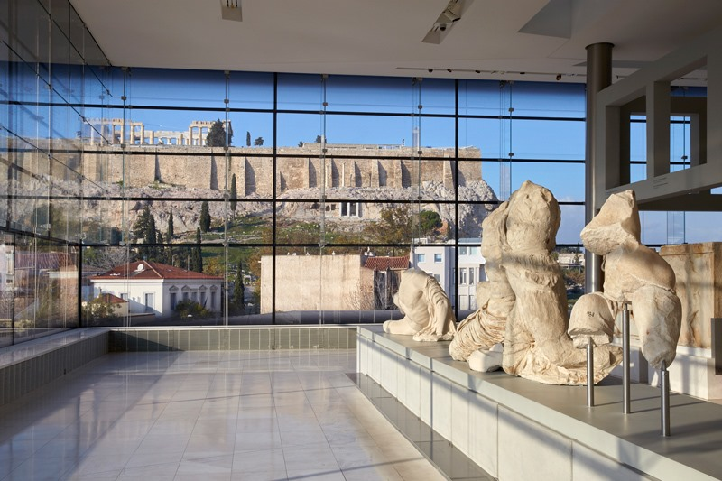
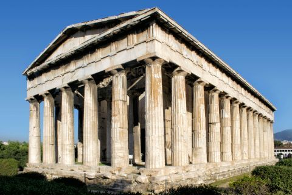
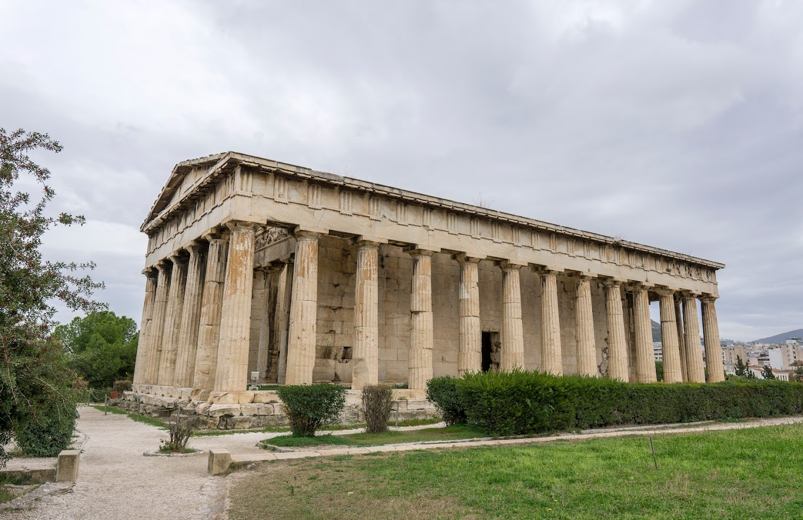
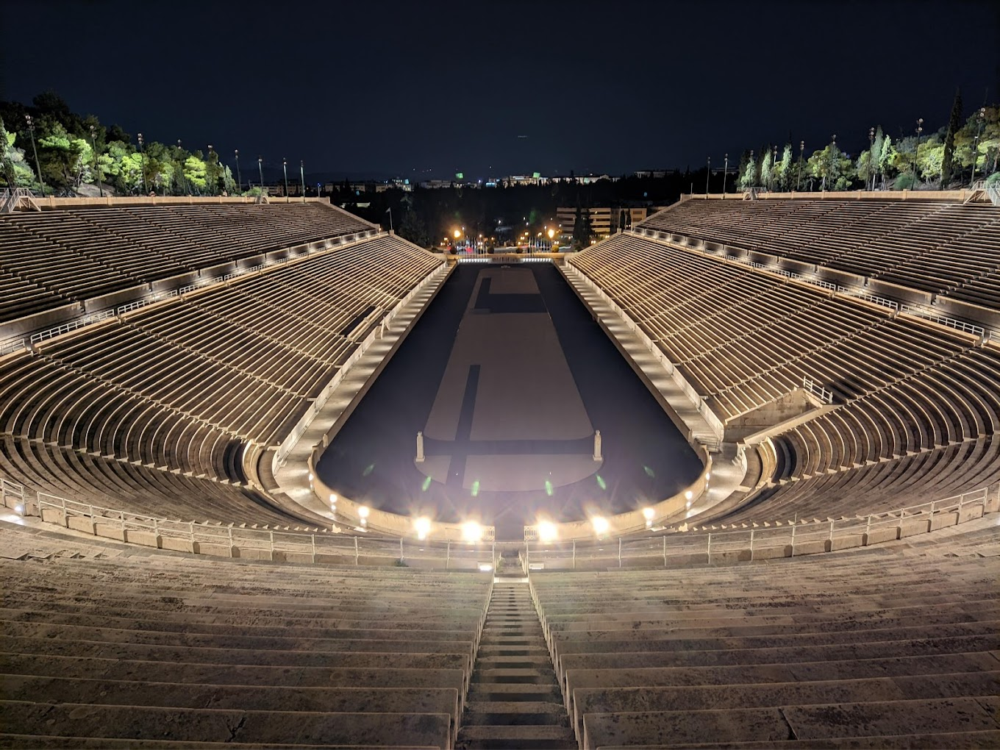

-

- Area: Akropolis
- Tip by Nikos: Do not forget to visit Parthenon (religious temple the Athenians built for the Greek goddess Athena)
- How close to Syntagma Square: 13 min 🚶🚶🚶
-

- Area: Monastiraki
- Tip by Nikos: Agora was the political and business center of Athens, bringing together citizens and foreigners, merchants and philosophers.
- How close to Syntagma Square: 12 min 🚶🚶🚶
-

- Area: Thiseio
- Tip by Nikos: It is considered the best preserved ancient temple in Greece. It remains almost intact
- How close to Syntagma Square: 16 min 🚶🚶🚶
-

- Area: Akropolis
- Tip by Nikos: Roman theatre structure located on the southwest slope of the Acropolis of Athens. Great place with great vibes
- How close to Syntagma Square: 19 min 🚶🚶🚶
-

- Area: Center (Mets)
- Tip by Nikos: The only stadium in the world built entirely of marble. It hosted the first modern Olympics in 1896.
- How close to Syntagma Square: 24 min 🚶🚶🚶 or 10 min by 🚕
-

- Area: Exarcheia
- Tip by Nikos: This place used to be a schoolyard. Good food at reasonable prices.
- How close to Syntagma Square: 26 min 🚶🚶🚶 or 8 min by 🚕
-

- Area: Monastiraki
- Tip by Nikos: Here you can enjoy traditional dishes with a gourmet touch. It is considered expensive but it is worth it. You might need to make a reservation
- How close to Syntagma Square: 6 min 🚶🚶🚶